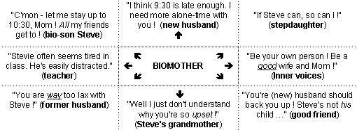

|
Loyalty conflicts occur when an adult or child must choose who to support between two or more other people in conflict. This usually feels like a lose-lose dilemma, for choosing one person risks offending the other/s, and choosing no one offends everyone. Loyalty conflicts are universal in divorcing families and new stepfamilies - and until resolved, become major relationship and family stressors.  |